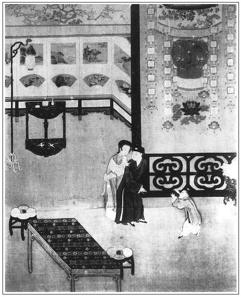

張回此回總寫西門慶治家愚闕之失也。上半寫西門不能守禮，防邪亂於未然；中段寫月娘付理亂於不聞，一任婦女遙街行走，而西門亦止醉夢，一線不知，成何家范？下半寫西門偏愛蕙蓮，便不能統服眾下。即惠祥失誤點茶，固亦職分中事，使西門不與蕙蓮勾搭，雖百鞭惠祥，有何閒說？乃止因一事下替，遂起凌夷之漸。作者蓋深為處家者棒喝也，凡有家者識之。
此回文字，又特特於樓上賞燈作對。如言「疑為公侯人家」一語，遙照燈樓下一語，一字不差。蕙蓮幾個「一回」，與金蓮登樓幾個「一回」又遙遙作以。蓋寫蕙蓮原欲將其結果，為瓶兒作履霜之戒，故又寫一元夜叉到獅子街燈樓上。而蕙蓮又作者欲再作一金蓮之後塵。故又用幾個「一回」字，特特遙照也。
寫金蓮遞酒，必用西門慶自叫他去，且隨即留敬濟於眾美中不顧而去。宜乎雙珠盡失，且又不全病月娘也。
敬濟即戲金蓮，又挑蕙蓮，見迷色者逢雲即是巫山，遇水皆雲洛浦。此等心事，又不特西門一人，而漸漸心粗膽大，以至難制，皆西門失防之故也。
蕙蓮看破機關，為後文金蓮必欲妒死之因。蓋以蕙蓮之為人，有何涵養？腹中一事歷久而不出者，止因懼怕金蓮，不敢聲揚。彼固自云「等他再有言語到我們，我自有話說。」然則蕙蓮固必然將此意點明金蓮。而金蓮險人也，豈肯又如前番受雪娥、嬌兒一挫之虧哉，固不惜晝夜圖維，千方百計思所以去之，而天假其便，忽有來旺兒言，以中其計，行其術，必至於置之死地而後已也。然而窗外一覷春風，早為一付勾魂帖。蕙蓮自為得意，不知其賈禍之機，實本於此也。此文作者深著世情之險，危機觸處皆然。人甚勿以拿人細處為得計也。看官每不肯於無字中想其用意，其妙意安得出！
上回金蓮一覷蕙蓮，已理一妨根於自己腹內；此處蕙蓮一覷金蓮，又伏一惡刺於他人眼中。一層深一層，所以必死之而後已也。文字深淺之法，誰其知之？
此回全是透露末路文字：看其寫金蓮、敬濟處，寫韓嫂兒，寫賁四嫂，寫長姐，寫惠祥。夫寫惠祥，何以見其亦為末路寫也？不見後文來保欺恩，以此日之惠祥，與彼日之惠祥，遙遙一照，即知天道報應處絲毫不爽。總之，上文諸人皆完聚，下文又要出一雪娥之丑，露蕙蓮之破。此日乃全勝時，不全勝時又為之預先一照，匪特勸懲何在？亦何以為之文法哉！
獅子街，武二哥報仇之處，乃瓶兒又住此，王六兒又住此。今必令金蓮兩至其地，且蕙蓮亦必至其地。真是作孽者每與死地相尋，而不肯一遠。寫盡作孽人矣。
詩曰：
銀燭高燒酒乍醺，當筵且喜笑聲頻。
蠻腰細舞章台柳，素口輕歌上苑春。
香氣拂衣來有意，翠花落地拾無聲。
不因一點風流趣，安得韓生醉後醒。

話說一日，天上元宵，人間燈夕，西門慶在廳上張掛花燈，鋪陳綺席。正月十六，閤家歡樂飲酒。西門慶與吳月娘居上，其餘李嬌兒、孟玉樓、潘金蓮、李瓶兒、孫雪娥、西門大姐都在兩邊同坐，都穿著錦繡衣裳。春梅、玉簫、迎春、蘭香一般兒四個家樂，在旁擽箏歌板，彈唱燈詞。獨於東首設一席與女婿陳敬濟坐。果然食烹異品，果獻時新。小玉、元宵、小鸞、繡春都在上面斟酒。那來旺兒媳婦宋蕙蓮卻坐在穿廊下一張椅兒上，口裡嗑瓜子兒。等的上邊呼喚要酒，他便揚聲叫：「來安兒，畫童兒，上邊要熱酒，快趲酒上來！賊囚根子，一個也沒在這裡伺候，都不知往那去了！」繡眉婆娘之做作口腔，寫得活現。張夾寫盡恃寵。只見畫童燙酒上去。西門慶就罵道：「賊奴才，一個也不在這裡伺候，往那去來？賊少打的奴才！」繡旁叫得應，妙。小廝走來說道：「嫂子，誰往那去來？就對著爹說，吆喝教爹罵我。」蕙蓮道：「上頭要酒，誰教你不伺候？關我甚事！不罵你罵誰？」畫童兒道：「這地上乾乾淨淨的，嫂子嗑下恁一地瓜子皮，爹看見又罵了。」蕙蓮道：「賊囚根子！六月債兒熱，還得快就是。張夾明從。甚麼打緊，便當你不掃，丟著，另教個小廝掃。等他問我，只說得一聲。」張夾不要臉矣。不知皆為來旺「醉罵」一節生根也。畫童兒道：「耶樂，嫂子，將就些罷了，如何和我合氣！」於是取了笤帚來，替他掃瓜子皮兒，不題。
卻說西門慶席上，見女婿陳敬濟沒酒，吩咐潘金蓮去遞一巡兒。繡旁自送與女婿，妙。繡眉人人皆知防嫌，及到其時，偏信心，偏托大，不知何故。張夾西門之愚。這金蓮連忙下來，滿斟杯酒，笑嘻嘻遞與敬濟，說道：「姐夫，你爹吩咐，好歹飲奴這杯酒兒。」敬濟一壁接酒，一面把眼兒斜溜婦人，說：「五娘請尊便，等兒子慢慢吃！」婦人將身子把燈影著，左手執酒，剛待的敬濟將手來接，右手向他手背只一撚，張夾反先撚，可殺。這敬濟一面把眼瞧著眾人，一面在下戲把金蓮小腳兒踢了一下。婦人微笑，低聲道：「怪油嘴，你丈人瞧著待怎麼？」張夾妙絕三字。兩個在暗地裡調情頑耍，眾人倒不曾看出來。繡眉處處調戲一番，以見非一朝一夕之故。不料宋蕙蓮這婆娘，在隔子外窗眼裡，被他瞧了個不耐煩。繡旁看破，妙。張夾必死蕙蓮又在此。口中不言，心下自忖：「尋常在俺們跟前，到且是精細撇清，誰想暗地卻和這小伙子兒勾搭。今日被我看出破綻，到明日再搜求我，張旁蕙蓮死矣。自有話說。」正是：
誰家院內白薔薇，暗暗偷攀三兩枝。
羅袖隱藏人不見，馨香惟有蝶先知。
飲酒多時，西門慶忽被應伯爵差人請去賞燈。吩咐月娘：「你們自在耍耍，我往應二哥家吃酒去來。」玳安、平安兩個跟隨去了。張夾以上一段寫西門自開端。
月娘與眾姊妹吃了一回，但見銀河清淺，珠斗爛斑，一輪團圓皎月從東而出，照得院宇猶如白晝。婦人或有房中換衣者，或有月下整妝者，或有燈前戴花者。惟有玉樓、金蓮、李瓶兒三個並蕙蓮，在廳前看敬濟放花兒。李嬌兒、孫雪娥、西門大姐都隨月娘後邊去了。張旁月娘又放心。金蓮便向二人說道：「他爹今日不在家，咱對大姐姐說，往街上走走去。」蕙蓮在旁說道：「娘們去，也攜帶我走走。」金蓮道：「你既要去，你就往後邊問聲你大娘和你二娘，看他去不去，俺們在這裡等著你。」那蕙蓮連忙往後邊去了。玉樓道：「他不濟事，等我親自問他聲去。」李瓶兒道：「我也往屋裡穿件衣裳，只怕夜深了冷。」金蓮道：「李大姐，你有披襖子，帶件來我穿，省得我往屋裡去。」繡旁有心。那李瓶兒應諾去了。繡眉一個個都去得乾淨。獨剩下金蓮一個，看著敬濟放花兒。見無人，走向敬濟身上捏了一把，繡旁情不禁矣。笑道：「姐夫原來只穿恁單薄衣裳，不害冷麼？」只見家人兒子小鐵棍兒笑嘻嘻在跟前，舞旋旋的且拉著敬濟，要炮𤍤放。繡旁又插一混，以費工夫。這敬濟恐怕打攪了事，巴不得與了他兩個元宵炮𤍤，支他外邊耍去了。於是和金蓮嘲戲說道：「你老人家見我身上單薄，肯賞我一件衣裳兒穿穿也怎的？」金蓮道：「賊短命，得其慣便了，頭裡頭躡我的腳兒，我不言語，如今大膽，又來問我要衣服穿！我又不是你影射的，何故把與你衣服穿？」張夾自認，妙。敬濟道：「你老人家不與就罷了，如何扎筏子來諕我？」婦人道：「賊短命，你是城樓上雀兒，好耐驚耐怕的蟲蟻兒！」張夾忽插此一段，試問西門出門，放心不顧，其愚為何如？正說著，見玉樓和蕙蓮出來，向金蓮說道：「大娘因身上不方便，張夾月娘懷胎，卻於此處插入。大姐不自在，故不去了。教娘們走走，早些來家。張夾豈詩禮人家風範？而月娘信乎為不知大禮之大人也。文旁本不是詩禮人家，先生忘記是開生藥鋪之西門慶家乎？李嬌兒害腿疼，也不走。孫雪娥見大姐姐不走，恐怕他爹來家嗔他，也不出門。」金蓮道：「都不去罷，只咱和李大姐三個去罷。等他爹來家，隨他罵去！再不，把春梅小肉兒和上房裡玉簫，你房裡蘭香，李大姐房裡迎春，都帶了去。」小玉走來道：「俺奶奶已是不去，我也跟娘們走走。」玉樓道：「對你奶奶說了去，我前頭等著你。」良久，小玉問了月娘，笑嘻嘻出來。
當下三個婦人，帶領著一簇男女。來安、畫童兩個小廝，打著一對紗吊燈跟隨。女婿陳敬濟踹著馬台，放煙火花炮，與眾婦人瞧。張夾臨出門又作波也。宋蕙蓮道：「姑夫，你好歹略等等兒。娘們攜帶我走走，我到屋裡搭搭頭就來。」敬濟道：「俺們如今就行。」蕙蓮道：「你不等，我就惱你一生！」繡眉偏到臨時扣節，鬼亂作怪，人往往如此。張夾總罪西門。於是走到屋裡，換了一套綠閃紅緞子對衿衫兒、白挑線裙子。又用一方紅銷金汗巾子搭著頭，額角上貼著飛金並面花兒，金燈籠墜耳，出來跟著眾人走百媚兒。月色之下，恍若仙娥，都是白綾襖兒，遍地金比甲。頭上珠翠堆滿，粉面朱唇。敬濟與來興兒，左右一邊一個，隨路放慢吐蓮、金絲菊、一丈蘭、賽月明。出的大街市上，但見香塵不斷，遊人如蟻，花炮轟雷，燈光雜彩，簫鼓聲喧，十分熱鬧。遊人見一對紗燈引道，一簇男女過來，皆披紅垂綠，以為出於公侯之家，莫敢仰視，都躲路而行。張夾與樓上看燈遙對。那宋蕙蓮一回叫：「姑夫，你放個桶子花我瞧。」一回又道：「姑夫，你放個元宵炮𤍤我聽。」一回又落了花翠，拾花翠；一回又掉了鞋，扶著人且兜鞋；張夾與樓上看燈，金蓮幾個「一回」，特特作對。左來右去，只和敬濟嘲戲。繡眉借蕙蓮映出元宵景致，絕不冷落。玉樓看不上，說了兩句：「如何只見你掉了鞋？」玉簫道：「他怕地下泥，套著五娘鞋穿著哩！」繡旁一味作怪。張夾金蓮何堪。玉樓道：「你叫他過來我瞧，真個穿著五娘的鞋兒？」金蓮道：「他昨日問我討了一雙鞋，誰知成精的狗肉，套著穿！」蕙蓮摳起裙子來，與玉樓看。看見他穿著兩雙紅鞋在腳上，用紗綠線帶兒紮著褲腿，一聲兒也不言語。張夾則其素日顛狂，為玉樓不堪者，一筆皆出矣。
須臾，走過大街，到燈市裡。金蓮向玉樓道：「咱如今往獅子街李大姐房子裡走走去。」於是吩咐畫童、來安兒打燈先行，迤邐往獅子街來。小廝先去打門，老馮已是歇下，房中有兩個人家賣的丫頭，在炕上睡。慌的老馮連忙開了門，讓眾婦女進來，旋戳開爐子頓茶，挈著壺往街上取酒。孟玉樓道：「老馮你且住，不要去打酒，俺們在家酒飯吃得飽飽來，你有茶，倒兩甌子來吃罷。」金蓮道：「你既留人吃酒，先訂下菜兒才好。」李瓶兒道：「媽媽子，一瓶兩瓶取來了，打水不渾的，夠誰吃？要取一兩壇兒來。」繡眉李瓶兒見了馮媽媽，便能取笑，齒牙之妙，自讓金蓮、玉樓一籌。玉樓道：「他哄你，不消取，只看茶來罷。」那婆子方才不動身。李瓶兒道：「媽媽子，怎的不往那邊去走走，端的在家做些甚麼？」婆子道：「奶奶，你看丟下這兩個業障在屋裡，誰看他？」玉樓便問道：「兩個丫頭是誰家賣的？」婆子道：「一個是北邊人家房裡使女，十三歲，只要五兩銀子；一個是汪序班家出來的家人媳婦，家人走了，主子把䯼髻打了，領出來賣，要十兩銀子。」玉樓道：「媽媽，我說與你，有一個人要，你賺他些銀子使。」
婆子道：「三娘，果然是誰要？告我說。」玉樓道：「如今你二娘房裡，只元宵兒一個，不夠使，還尋大些的丫頭使喚。你倒把這大的賣與他罷。」因問：「這個丫頭十幾歲？」婆子道：「他今年十七歲了。」說著，拿茶來，眾人吃了茶。那春梅、玉簫並蕙蓮都前邊瞧了一遍，又到臨街樓上推開窗看了一遍。陳敬濟催逼說：「夜深了，看了快些家去罷。」金蓮道：「怪短命，催的人手腳兒不停住，慌的是些甚麼！」乃叫下春梅眾人來，方才起身。馮媽媽送出門，李瓶兒因問：「平安往那去了？」婆子道：「今日這咱還沒來，叫老身半夜三更開門閉戶等著他。」來安兒道：「今日平安兒跟了爹往應二爹家去了。」李瓶兒吩咐媽媽子：「早些關了門，睡了罷！他多也是不來，省的誤了你的困頭。明日早來宅裡，送丫頭與二娘來。你是石佛寺長老，請著你就張致了。」說畢，看著他關了大門，這一簇男女方才回家。
走到家門首，只聽見住房子的韓回子老婆韓嫂兒聲喚。繡旁又作波。因他男子漢答應馬房內臣，他在家跟著人走百病兒去了，醉回來家，說有人挖開他房門，偷了狗，又不見了些東西，坐在當街上撒酒瘋罵人。眾婦人方才立住了腳。金蓮使來安兒把韓嫂兒叫到當面，問道：「你為甚麼來？」韓嫂兒扠手向前，拜了兩拜，說道：「三位娘子在上，聽小媳婦告訴。」於是從頭說了一遍。玉樓眾人聽了，每人掏袖中些錢果子與他，叫來安兒：「你叫你陳姐夫送他進屋裡。」那敬濟且顧和蕙蓮兩個嘲戲，不肯搊他去。金蓮使來安兒扶到他家中，吩咐教他明日早來宅內漿洗衣裳：「我對你爹說，替你出氣。」那韓嫂兒千恩萬謝回家去了。
玉樓等剛走過門首來，只見賁四娘子，繡旁又一波。在大門首張眉韓，寒也。賁，葉也。皆西門慶臨死散場之人。此處預為一照，故知「冰鑒」一回乃小結煞也。笑嘻嘻向前道了萬福，說道：「三位娘那裡走了走？請不棄到寒家獻茶。」玉樓道：「方纔因韓嫂兒哭，俺站住問了他聲。承嫂子厚意，天晚了，不到罷。」賁四娘子道：「耶樂，三位娘上門怪人家，就笑話俺小家人家茶也奉不出一杯兒來？」生死拉到屋裡。原來上邊供養觀音八難並關聖賢，當門掛著雪花燈兒一盞。掀開門簾，擺設春台，與三人坐。連忙教他十四歲女兒長姐過來，與三位娘磕頭遞茶。玉樓、金蓮每人與了他兩枝花兒。李瓶兒袖中取了一方汗巾，又是一錢銀子，與他買瓜子兒嗑。喜歡的賁四娘子拜謝了又拜。款留不住，玉樓等起身。到大門首，小廝來興在門首迎接。金蓮就問：「你爹來家不曾？」來興道：「爹未回家哩。」三個婦人，還看著陳敬濟在門首放了兩個一丈菊和一筒大煙蘭、一個金盞銀台兒，才進後邊去了。繡旁餘興未已。西門慶直至四更來家。張夾以上一段，寫西門沒家法。正是：
醉後不知天色暝，任他明月下西樓。
卻說那陳敬濟因走百病，與金蓮等眾婦人嘲戲了一路兒，又和蕙蓮兩個言來語去，都有意了。次日早晨梳洗畢，也不到鋪子內，逕往後邊吳月娘房裡來。只見李嬌兒、金蓮陪著吳大妗子，放炕桌兒，才擺茶吃。月娘便往佛堂中燒香去了。這小伙兒向前作了揖，坐下。金蓮便說道：「陳姐夫，你好人兒！昨日教你送送韓嫂兒，你就不動，只當還教小廝送去了。且和媳婦子打牙犯嘴，不知甚麼張致！繡眉竟一口叫破，微帶三分醋意。等你大娘燒了香來，看我對他說不說！」敬濟道：「你老人家還說哩，昨日險些兒子腰梁㿚瘍了哩！跟你老人家走了一路兒，又到獅子街房裡回來，該多少裡地？人辛苦走了，還教我送韓回子老婆！教小廝送送也罷了。睡了多大回就天曉了，今早還扒不起來。」正說著，吳月娘燒了香來，敬濟作了揖。月娘便問：「昨日韓嫂兒為甚麼撒酒瘋罵人？」敬濟把因走百病，被人挖開門，不見了狗，坐在當街哭喊罵人，「今早他漢子來家，一頓好打的，繡旁完。這咱還沒起來哩。」金蓮道：「不是俺們回來，勸的他進去了，一時你爹來家撞見，甚麼樣子！」說畢，玉樓、李瓶兒、大姐都到月娘屋裡喫茶，敬濟也陪著吃了茶。後次大姐回房，罵敬濟：「不知死的囚根子！平白和來旺媳婦子打牙犯嘴，倘忽一時傳的爹知道了，淫婦便沒事，繡旁毒甚。繡眉「淫婦便沒事」一語，罵盡古今溺愛甘受臭名人。你死也沒處死！」張夾又足上文，點明調戲處。
卻說那日，西門慶在李瓶兒房裡宿歇，起來的遲。只見荊千戶──新升一處兵馬都監──來拜。西門慶才起來梳頭，包網巾，整衣出來，陪荊都監在廳上說話。一面使平安兒進後邊要茶。宋蕙蓮正和玉簫、小玉在後邊院子裡撾子兒，賭打瓜子，頑成一塊。那小玉把玉簫騎在底下，笑罵道：「賊淫婦，輸了瓜子，不教我打！」因叫蕙蓮：「嫂子你過來，扯著淫婦一隻腿，等我㒲這淫婦一下子。」繡眉騷丫頭一種不能自持情態，宛然。正頑著，只見平安走來，叫：「玉簫姐，前邊荊老爹來，使我進來要茶哩。」那玉簫也不理他，且和小玉廝打頑耍。那平安兒只顧催逼說：「人坐下這一日了。」宋蕙蓮道：「怪囚根子，爹要茶，問廚房裡上灶的要去，如何只在俺這裡纏？俺這後邊只是預備爹娘房裡用的茶，不管你外邊的帳。」那平安兒走到廚房下。那日該來保妻蕙祥，蕙祥道：「怪囚，我這裡使著手做飯，你問後邊要兩鍾茶出去就是了，巴巴來問我要茶！」平安道：「我到後頭來，後邊不打發茶。蕙蓮嫂子說，該是上灶的首尾。」蕙祥便罵道：「賊淫婦，他認定了他是爹娘房裡人，繡旁惠祥亦多事。俺天生是上灶的來？我這裡又做大傢伙裡飯，又替大妗子炒素菜，幾隻手？論起就倒倒茶兒去也罷了，巴巴坐名兒來尋上灶的，上灶的是你叫的？繡眉言雖過暴，然亦是正理。誤了茶也罷，我偏不打發上去。」平安兒道：「荊老爹來了這一日，嫂子快些打發茶，我拿上去罷。遲了又惹爹罵！」
當下這裡推那裡，那裡推這裡，就耽誤了半日。比及又等玉簫取茶果、茶匙兒出來，平安兒拿茶出去，那荊都監坐的久了，再三要起身，被西門慶留住。嫌茶冷不好吃，喝罵平安另換茶上去吃了，荊都監才起身去了。西門慶進來，問：「今日茶是誰頓的？」平安道：「是灶上頓的茶。」西門慶回到上房，告訴月娘：「今日頓這樣茶出去，你往廚下查那個奴才老婆上灶？採出來問他，打與他幾下。」小玉道：「今日該蕙祥上灶。」慌的月娘說道：「這歪剌骨待死！越發頓恁樣茶上去了。」一面使小玉叫將蕙祥當院子跪著，問他要打多少。蕙祥答道：「因做飯，炒大妗子素菜，使著手，茶略冷了些。」被月娘數罵了一回，饒了他起來。吩咐：「今後但凡你爹前邊人來，教玉簫和蕙蓮後邊頓茶，灶上只管大家茶飯。」
這蕙祥在廚下忍氣不過，剛等的西門慶出去了，氣狠狠走來後邊，尋著蕙蓮，指著大罵：「賊淫婦，趁了你的心了！罷了，你天生的就是有時運的爹娘房裡人，俺們是上灶的老婆來？巴巴使小廝坐名問上灶要茶，上灶的是你叫的？你識我見的，『促織不吃癩蛤蟆肉──都是一鍬土上人』。你恆數不是爹的小老婆就罷了。就是爹的小老婆，我也不怕你！」蕙蓮道：「你好沒要緊，你頓的茶不好，爹嫌你，管我甚事？你如何拿人撒氣？」蕙祥聽了，越發惱了，罵道：「賊淫婦！你剛才調唆打我幾棍兒好來，怎的不教打我？你在蔡家養的漢數不了，來這裡還弄鬼哩！」蕙蓮道：「我養漢，你看見來？沒的扯臊淡哩！嫂子，你也不是甚麼清淨姑姑兒！」繡眉落水拖人。蕙祥道：「我怎不是清淨姑姑兒？蹺起腳兒來，比你這淫婦好些兒。繡旁這或未必。你漢子有一拿小米數兒！你在外邊，那個不吃你嘲過？你背地干的那營生兒，只說人不知道。你把娘們還放不到心上，何況以下的人！」繡眉蕙蓮只灶上要茶一語，遂使生平所作一齊傾出，況士行乎！蕙蓮道：「我背地裡說甚麼來？怎的放不到心上？隨你壓我，我不怕你！」蕙祥道：「有人與你做主兒，你可知不怕哩！」兩個正拌嘴，被小玉請的月娘來，把兩個都喝開了：「賊臭肉們，不幹那營生去，都拌的是些甚麼？教你主子聽見又是一場兒。頭裡不曾打的成，等住回卻打的成了！」蕙祥道：「若打我一下兒，我不把淫婦口裡腸勾了也不算！我拚著這命，擯兌了你也不差廝甚麼。咱大家都離了這門罷！」說著往前去了。後次這宋蕙蓮越發猖狂起來，仗西門慶背地和他勾搭，把家中大小都看不到眼裡，逐日與玉樓、金蓮、李瓶兒、西門大姐、春梅在一處頑耍。張夾以上一段寫蕙蓮得寵，眾人不服。那日馮媽媽送了丫頭來，約十三歲，先到李瓶兒房裡看了，送到李嬌兒房裡。李嬌兒用五兩銀子買下，房中伏侍，不在話下。正是：
外作禽荒內色荒，連沾些子又何妨。
早晨跨得雕鞍去，日暮歸來紅粉香。
文回文禹門云：此回寫蕙蓮輕浮之態，可謂淋漓盡致，栩栩如生。世間有此等賤貨笨貨，而且頗多，一誤縱之，便思上天，如斷線之風箏；一誤觸之，使人握耳，如燃捻之爆竹。彼決不知人有羞恥事，此時雖欲收服之，不可得也。幸而有潘金蓮在。其先亦名金蓮者，蓋謂非金蓮不能降服蕙蓮耳。夫金蓮，毒物也，人世之砒霜也。以毒攻毒，非用此毒物，去毒病之毒，其害正未有了時，然則金蓮之毒，更可想矣。用之得法，砒霜可以治蕩婦，用之不得法，砒霜亦可以殺親夫。世尚有金蓮其人乎？為之夫者，可勿慎諸！